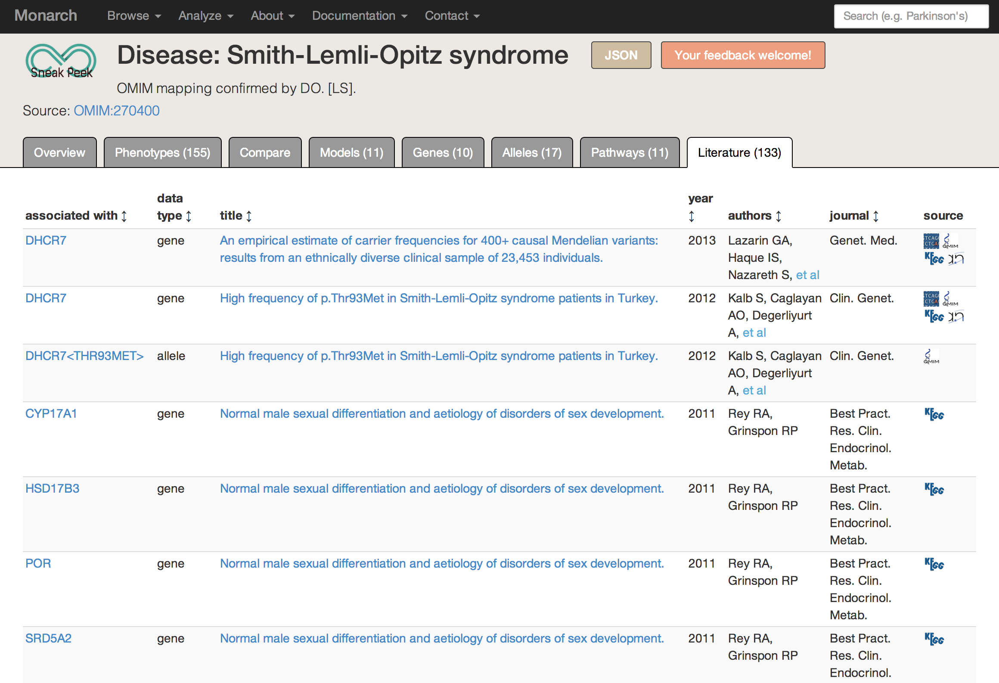
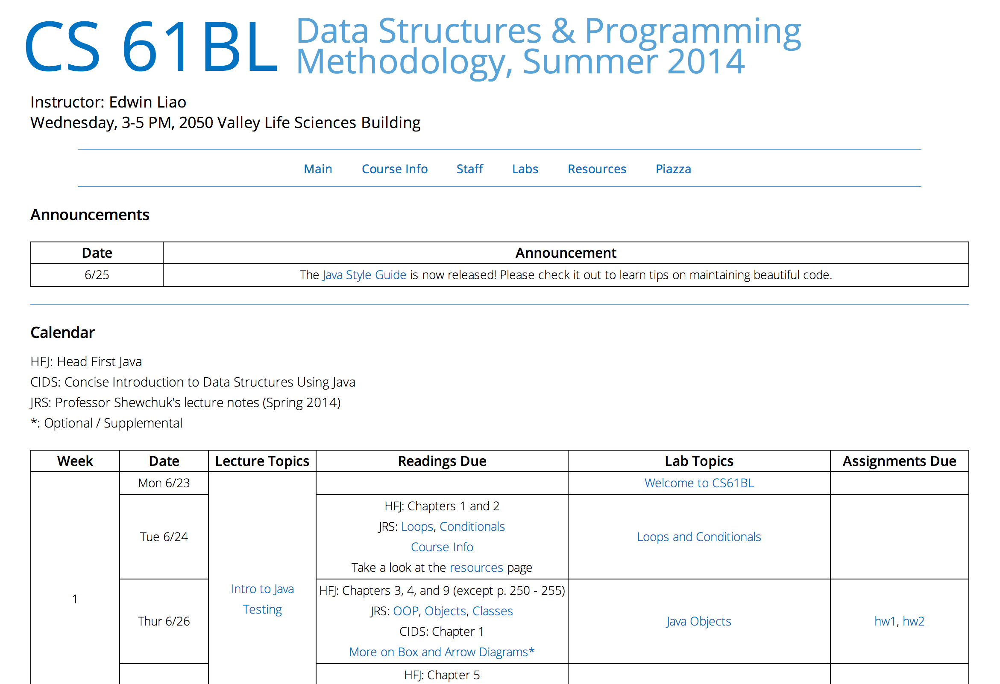
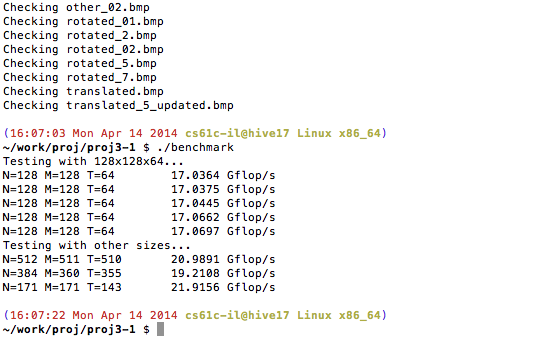
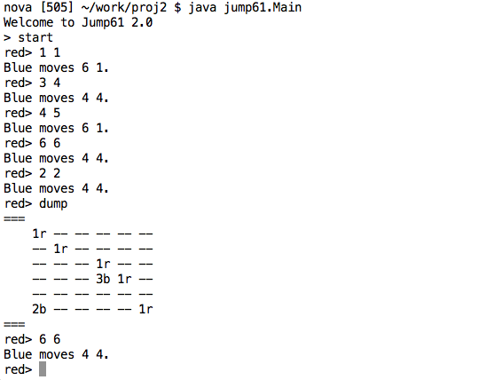
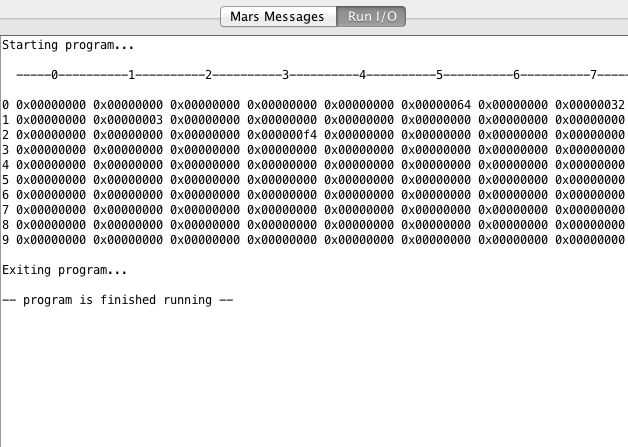

Projects
All
Personal
Work
CS 61B
CS 61C
These are personal projects I have worked on in my own time.
These are projects I have worked on as part of a job. You may not be able to access the
code for the projects below.
These are projects related to CS 61B (Data Structures). All of these projects
are in Java. Please email me for access to my code.
These are projects related to CS 61C (Computer Architecture & Machine Structures).
These projects are in C, MIPS, Java, CUDA, and Logism. Please email me for access
to my code.

Monarch Initiative
December 2013 - Present
The Monarch Initiative Discovery System contains a wealth of information
about model organisms, disease, phenotypes, genes, pathways, protein and genetic
interactions, and publications that suggest relationships among data points. It is
intended for use by researchers, scientists, and clinicians.
I work as a web developer & designer to ensure that the data is processed and
displayed clearly.

CS 61BL Lab Infrastructure
May 2014 - Present
I created a new labs website
for CS 61BL at UC Berkeley to replace the outdated UC-Wise system. I received help from
Nate Titterton and used some JavaScript
loader files created originally by BJC Berkeley
for CS 10. An example lab is linked below.

CS 61BL Website
May 2014 - Present
I created a simple static course website for CS 61BL (Data Structures & Programming
Methodology in Java). The instructor and I update this site regularly with
announcements, homework assignments, links to the lab website, lecture slides,
and reading materials. It also contains a listing of the course policies.

CSUA Website
October 2013 - Present
The UC Berkeley Computer Science Undergraduate Association supports
undergraduate computer scientists by providing computing services
and by running informational workshops and events featuring speakers
from industry and academia.
I used HTML, CSS, and JavaScript/jQuery. The website is hosted on the CSUA's soda.berkeley.edu server.
I used HTML, CSS, and JavaScript/jQuery. The website is hosted on the CSUA's soda.berkeley.edu server.

Graph API & Clients
December 2013
I built a graph data structure and two clients in CS 61B with Prof.
Hilfinger. One client modeled a make file system and used graphs to
build prerequisites and process targets. The other
client (pictured left) took in map data of locations and roads and output
directions for the shortest path between two points.
This project was built from scratch in Java. I learned about API implementation, make file systems, graph traversals, and shortest path algorithms (e.g. A* search).
This project was built from scratch in Java. I learned about API implementation, make file systems, graph traversals, and shortest path algorithms (e.g. A* search).

CPU Optimization
April 2014
I optimized a previously coded Digit Recognition project for CPU performance
on Intel Xeon quad-core multi-processors in CS 61C with Prof. Garcia. I
used OpenMP, SSE Instructions, and loop unrolling to optimize my C code
in addition to rewriting and creating special indexing for large
cases. It went from 1.5 Gflops/s to 17 Gflops/s for small
and 20 Gflops/s for large cases.

GPU Optimization
April 2014
I optimized a previously coded Digit Recognition project for GPU performance
on an NVIDIA Tesla graphics card in CS 61C with Prof. Garcia.
I translated my code from C to CUDA and rewrote the code to use array indexing
rather than copying data. My code used two kernels for calculating
distances and reducing sums. I also used loop unrolling to boost my code
from 1 Gflop/s to 5 Gflops/s.

Jumping Cubes
November 2013
I built this command line game called jumping cubes in CS 61B with Prof.
Hilfinger. It is a two player game that ends when one player has control
over the whole board.
This project was built from scratch in Java. Because both players could be manual or AI, I learned about user input parsing and sanitation and AI game trees and heuristics. My AI actually now consistently beats me and can pursue forced wins up to four moves in advance.
This project was built from scratch in Java. Because both players could be manual or AI, I learned about user input parsing and sanitation and AI game trees and heuristics. My AI actually now consistently beats me and can pursue forced wins up to four moves in advance.

Processor Design
May 2014
My partner and I designed a two-stage pipelined processer for the Ida
assembly language for CS 61C with Prof. Garcia. The Ida assembly language
was based off of MIPS, and our processor was able to execute 16 different
instructions. We implemented instruction fetches, ALU computations,
memory read/writes, register file read/writes, jumps, and the
comparison register unique to Ida in Logism.

Digit Recognition
February 2014
My partner and I implemented a simple version of digit recognition
in CS 61C with Prof. Garcia. The digit recognition works by
comparing the "digit distances" between a set of template images
and a test image. We flipped, rotated, translated the template images
for comparison with the test images and predicted the digit value of
each test image.
The code was written in C. I later changed and optimized this project
for running on both the CPU and the GPU.

Sparse-to-Dense Matrix
February 2014
My partner and I implemented two concepts in MIPS for CS 61C with
Prof. Garcia. Firstly, we computed the stopping time for hailstone
sequences based on the Collatz conjecture. Secondly, we converted
between dense and sparse matrices to save memory space while allowing
for correct access to users.
We used the MARS IDE to assemble and interpret our MIPS. I learned
how to code in assembly language and how data storage works in low-level
languages.

Text Formatter
October 2013
I built a text formatter quite similar to LaTeX in CS 61B with Prof.
Hilfinger. It parses user input (text, commands, arguments, comments,
endnotes, etc.) and formats the text properly filled and justified with
endnotes.
This project was built from scratch in Java. I learned about scanning user input, parsing buffered tokens, controlling/directing token flow, and outputting formatted text.
This project was built from scratch in Java. I learned about scanning user input, parsing buffered tokens, controlling/directing token flow, and outputting formatted text.

Enigma Cryptography
September 2013
I built a virtual cryptography machine in CS 61B with Prof. Hilfinger.
It was modeled after the enigma machine, a complicated machine with
multiple changing rotors, used in WWII by Nazi Germany. Given rotor
settings and text, the machine can encode or decode message.
This project was built from scratch in Java. I learned about parsing inputs, variable permutation, and cryptography.
This project was built from scratch in Java. I learned about parsing inputs, variable permutation, and cryptography.

MapReduce
March 2014
My partner and I built a program to solve Connect 4 in CS 61C with
Prof. Garcia. We output the win-loss game states from solving the
whole game by applying minimax game tree traversal using the Hadoop
MapReduce framework in Java. We then ran our code on clusters of 6, 9,
and 12 workers on the Amazon EC2 servers for large Connect 4 boards.

UPE Nu Website
March 2014 - May 2014
As a member of the IT Committee for UPE, I helped build part of the
website's Django backend. I worked on creating Officer and UserProfile
models and dynamically generating the office hours, tutoring, and
officers pages by querying the database.
Personal Website
November 2013 - Present
This personal website is my own piece of real estate on the Internet.
I hope to continue to develop it as a portfolio and to eventually
build the back-end for it that will allow it to function as my blog.
I used HTML, CSS, and JavaScript/jQuery. This website is currently hosted on GitHub pages (using a CNAME redirect).
I used HTML, CSS, and JavaScript/jQuery. This website is currently hosted on GitHub pages (using a CNAME redirect).